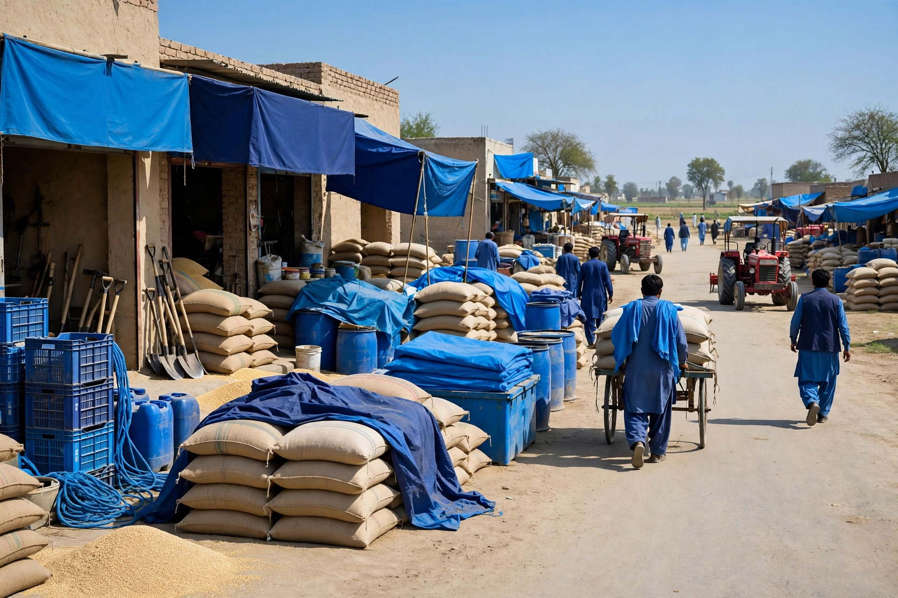
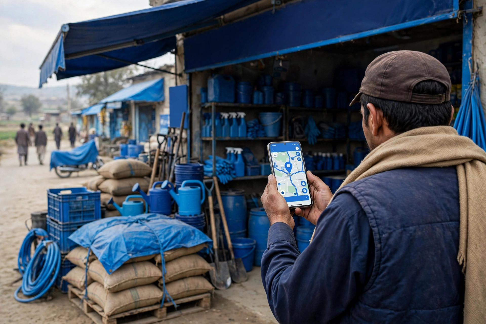

Most Chobara businesses grow through word of mouth, while new customers quietly check Google first. Zaheer Seo Expert, based in Layyah, helps Chobara shops, traders and service providers show up properly on Google and Maps, so the customers already searching for you actually find you.
In a town like Chobara, regular customers know your shop well. But new families, visitors and people from the villages around the town do not know anyone, so they ask Google. They search for the shop, clinic or service they need and choose from what appears on the screen.
There is another side to it. When Chobara businesses are invisible online, local customers often end up contacting businesses in Layyah or other towns simply because those are the ones Google showed them. Proper local SEO keeps Chobara customers buying in Chobara.
The same complete service range offered from the Layyah base, planned around the searches your Chobara customers actually make.
Your Google Business Profile set up or corrected with the right categories, services, photos and details, so Chobara customers find you on Maps.
Research into the words people in and around Chobara use on Google, including service plus area searches, then a clear plan for your pages.
Your website pages rewritten and structured around those searches, with clear titles, headings and service descriptions.
Useful pages and content written in simple words your customers understand, answering the questions they ask before buying.
Technical problems fixed behind the scenes, from slow mobile pages to indexing errors that stop Google showing your site.
An honest audit of your current website and profile, showing exactly what is missing compared with competitors in Layyah and nearby towns.

Any business that people look for in a hurry, or compare before spending money, benefits from being easy to find on Google.
Shops in the bazaars that appear in near me searches when families need daily goods, gifts or household items.
Dealers in seeds, fertiliser and farm supplies whose customers search on their phones before the season starts and during it.
Mobile, accessories and repair shops that customers compare on Google for services, stock and opening hours.
Doctors, clinics and medical stores that people search for urgently and choose based on location, timings and reviews.
Private schools, academies and tuition centres that parents check on Google before admissions and at the start of each session.
Tailors, salons, workshops and other local services that can win steady work by appearing when nearby customers search.
Zaheer Seo Expert has no office in Chobara. Everything is handled smoothly from Layyah, and most Chobara clients never need to travel.
Share your website or business name, and your Google presence and competitors are checked free of charge.
We discuss the findings and the plan on a call or WhatsApp, in simple words, with no pressure and no jargon.
Profile, pages and content are improved month by month according to the agreed plan.
You receive a monthly report showing rankings, calls and profile activity, and we adjust the plan together.
No. Zaheer Seo Expert is based in Layyah, at Rajan Shah Road, Rana Nagar, Chak 116 TDA, and serves Chobara businesses remotely. Meetings happen online or by phone, and in person meetings can be arranged in Layyah.
Word of mouth reaches people who already know someone. Google reaches everyone else: new residents, visitors and customers from surrounding villages who are ready to buy but do not know your name yet.
Yes. Your profile can be fully optimized first so you appear on Maps and in local searches. A simple website can be planned later to give you more pages and more chances to rank.
Just call or message on WhatsApp. You will first get a free audit of your current Google presence and a clear explanation of what should be fixed, before you decide anything.
Zaheer Seo Expert is based in Layyah and serves these areas with the same remote SEO service and monthly reporting.

Ask for a free audit of your Google Business Profile and website. You will see exactly where Chobara customers are finding your competitors instead of you.
Request Your Free Audit